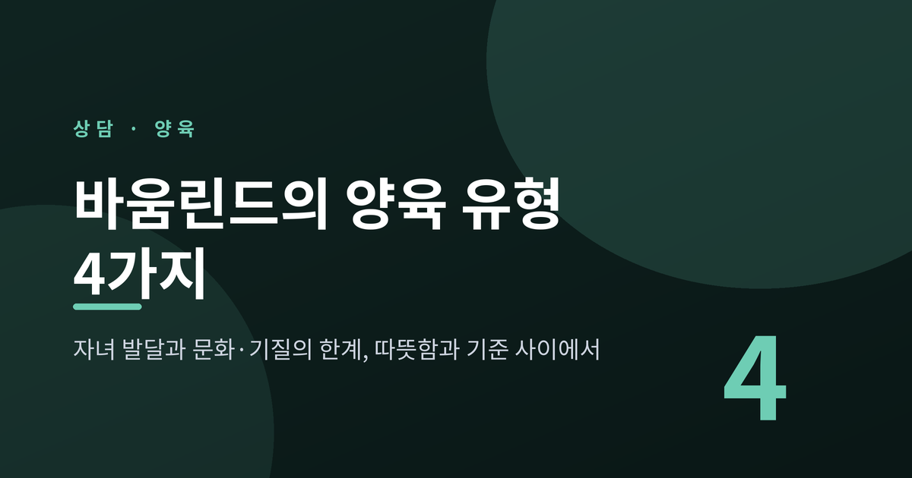
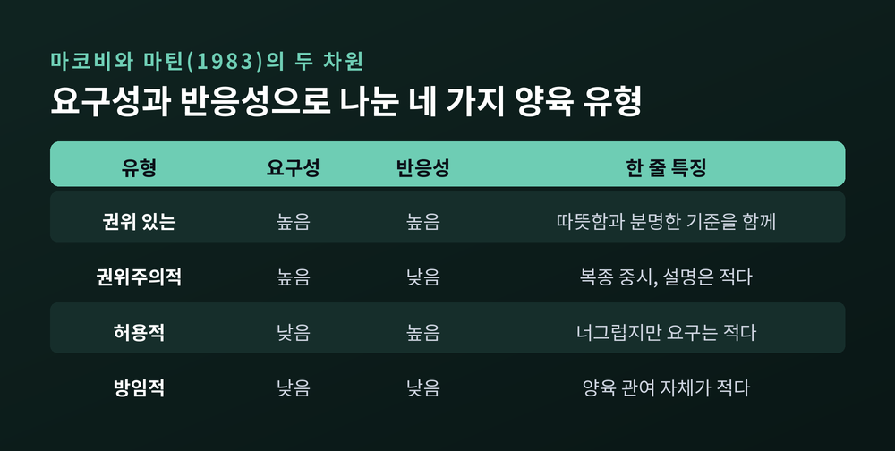
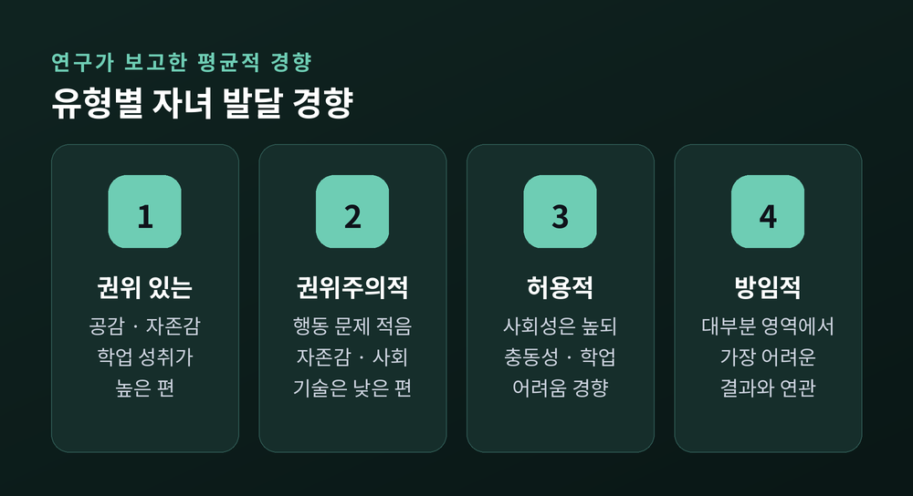
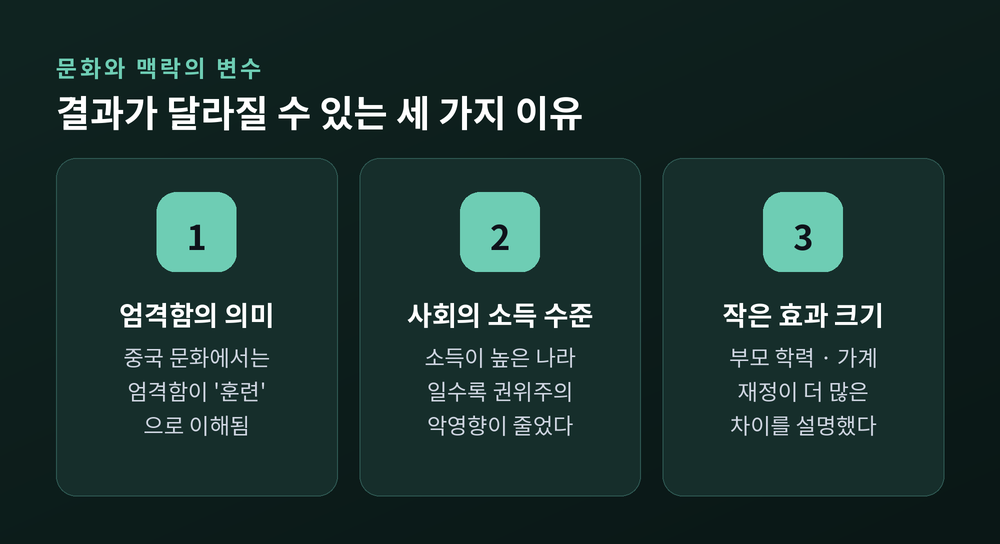

오늘은 바움린드의 양육 유형에 대해 이야기해 보려 합니다. 권위 있는·권위주의적·허용적·방임적 부모가 어떻게 다른지, 그 차이가 자녀 발달과 어떻게 이어진다고 보고되는지, 그리고 문화와 아이의 기질이 이 이야기를 어디까지 바꾸는지를 차례로 다루겠습니다. 특정 가정의 사례가 아니라 연구가 보고한 일반적인 경향을 중심으로 정리합니다.
먼저 결론부터 말씀드리면 이렇습니다. 연구는 따뜻함과 분명한 기준을 함께 가진 '권위 있는' 양육이 대체로 가장 좋은 결과와 이어진다고 보고합니다. 다만 이것은 부모를 채점하는 표가 아니라, 우리 집의 방향을 돌아보는 지도에 가깝습니다.
다이애나 바움린드는 1950~60년대에 4세 아동을 관찰했습니다. 유아원과 가정에서 체크리스트와 메모를 들고 수십 가족을 지켜보았고, 1971년에 더 자세한 결과를 발표했습니다. 양육 통제 방식을 세 유형으로 나눈 논문은 1966년으로 소개됩니다.
세 유형은 다음과 같습니다.
권위주의적 부모는 절대적인 기준으로 아이의 행동을 형성하고, 통제하고, 평가합니다. 복종을 중시하고, 설명 없이 명령이 지켜지기를 기대합니다.
허용적 부모는 통제와 처벌을 피합니다. 스스로를 아이가 원하는 대로 쓸 수 있는 자원처럼 두고, 책임이나 질서에 대한 요구는 적게 합니다.
권위 있는 부모는 아이의 활동을 합리적이고 문제 중심적인 방식으로 이끕니다. 대화를 장려하고 아이의 관점을 존중하면서도 기준은 분명히 둡니다.
용어가 헷갈리기 쉽습니다. 한국어로는 '권위주의적'이 '권위적'이나 '독재적'으로, '권위 있는'이 '민주적'으로 옮겨지기도 합니다. 글자는 비슷해도 가리키는 부모의 모습은 꽤 다릅니다.
1983년 마코비와 마틴은 이 유형을 두 개의 차원으로 다시 정리했습니다. 하나는 반응성입니다. 따뜻함과 지지, 정서적 관여가 여기에 속합니다. 다른 하나는 요구성입니다. 성숙한 행동에 대한 기대, 감독, 훈육 노력을 말합니다.
두 축을 겹치면 2x2 표가 만들어집니다. 이 과정에서 바움린드의 세 유형에 방임적(무관심) 유형이 네 번째로 더해졌습니다. 허용적 유형은 같은 맥락에서 '관대한(indulgent)' 유형으로 불리기도 합니다.

표에서 눈여겨볼 대목은 '엄격함'과 '따뜻함'이 서로 반대편에 있지 않다는 점입니다. 권위 있는 부모는 요구성도 높고 반응성도 높습니다. 기준을 세우는 일과 마음을 받아주는 일이 한 사람 안에서 함께 가능하다는 뜻입니다.
연구들이 보고하는 경향은 다음과 같이 요약됩니다.

권위 있는 양육은 사회적 유능성, 학업, 심리사회적 기능 전반에서 가장 일관되게 긍정적인 결과와 이어졌습니다. 공감과 또래 수용, 자존감, 학업 성취가 높고 비행과 공격성은 적은 편이었습니다.
권위주의적 양육은 학업이 중간 수준이고 행동 문제는 적지만, 자존감과 사회적 기술이 낮은 경향이 보고됩니다. 순응적이지만 행복감은 낮다는 서술도 있습니다.
허용적 양육은 자존감과 사회성이 높을 수 있습니다. 반면 문제 행동이 늘고 학업이 약해지며, 충동성과 자기조절의 어려움이 나타나는 경향이 있다고 합니다.
방임적 양육은 거의 모든 영역에서 가장 어려운 결과와 이어졌습니다. 낮은 자존감, 우울, 학업 부진과의 연관이 보고됩니다.
숫자보다 경향의 방향을 보시면 좋겠습니다. 이 결과들은 평균적인 흐름이지, 한 아이의 미래를 말해 주는 예언이 아닙니다.
권위주의적 부모와 권위 있는 부모의 차이는 규칙의 개수나 강도보다 규칙에 이유가 붙어 있느냐에서 도드라집니다.
국내 아동연구소의 설명에 따르면, 권위적인 부모 아래서 자란 아이는 벌과 상에 따라 움직이고 '들키지 않으면 된다'고 생각하기 쉽습니다. 권위 있는 부모 아래서는 아이가 스스로 옳고 그름을 판단하는 힘을 기르게 됩니다. 예를 들어 신호를 지키라고 할 때, 금지만 하지 않고 안전과 습관의 중요성을 차분히 설명하는 방식입니다.
그렇다고 허용적인 방향이 해답은 아닙니다. 한 육아 전문 매체는 통제가 거의 없고 아이의 요구를 대부분 받아주는 양육이 미숙함과 낮은 사회적 책임감으로 이어질 수 있다고 전합니다. 전문가들이 강조하는 것은 두 태도의 '조화'입니다. 자율성을 인정하면서 적절한 통제를 유지하는 일입니다.
예전에는 엄격하거나 너그럽거나, 둘 중 하나를 골라야 한다고 생각했습니다. 지금의 연구는 두 가지를 함께 쥐는 길이 있다고 말합니다.
여기까지가 널리 알려진 이야기입니다. 이제 한계를 짚어야 합니다.
연구가 보고한 바로는, 권위 있는 양육은 연구된 모든 민족집단 청소년의 심리사회적 결과와 이어졌습니다. 그러나 학업 성적과의 연관은 주로 유럽계와 히스패닉계 미국인에서 나타났습니다.
중국 문화를 다룬 루스 차오(1994)의 논문은 이 지점을 정면으로 짚었습니다. 서구 연구가 '통제'를 곧 해로운 것으로 읽는 동안, 중국 가정에서 엄격함은 아이를 가르치고 이끄는 '훈련'이라는 틀로 이해된다는 것입니다. 복종을 강조하는 문화권에서는 권위주의적 양육이 긍정적인 결과를 예측했다는 보고도 있습니다. 다만 동아시아에서 두 유형이 대등했다는 결과는 측정 방식의 차이가 만든 것일 수 있다는 단서도 함께 붙어 있습니다.
중국과 러시아의 권위 있는 부모를 다룬 연구도 흥미롭습니다. 이들은 아이의 의견을 묻는 민주적 방식을 서구만큼 내세우지 않았지만, 규칙과 결과를 설명하는 귀납적 훈육으로 긍정적 결과를 얻었습니다. 겉모양보다 '설명하고 이해시키는 태도'가 핵심이라는 해석이 가능합니다.

동남유럽 10개국의 14~29세 약 1만 900명(N=10,909)을 분석한 2025년 연구도 있습니다. 권위 있는 양육은 성적과 최종 학력에 일관되게 긍정적이었고, 권위주의적·허용적 양육은 부정적이었습니다. 그런데 1인당 소득이 높은 나라일수록 권위 있는 양육의 이점은 커지고 권위주의적 양육의 부정적 영향은 줄었습니다. 코소보와 마케도니아에서는 부정적 연관이 강했고, 슬로베니아와 크로아티아에서는 거의 중립이었습니다.
그러나 이 연구도 한계를 분명히 적었습니다. 효과 크기는 작았고, 부모의 학력이나 가계 재정이 양육 유형보다 더 많은 차이를 설명했습니다. 횡단 설계여서 인과를 단정할 수도 없습니다.
양육 유형 이야기에서 자주 빠지는 것이 아이 쪽의 사정입니다.
연구에 따르면 부모와 아이의 기질은 양방향으로 영향을 주고받습니다. 좌절 반응이 크고 충동적이며 의도적 통제가 낮은 아이는 부정적인 양육의 영향을 더 크게 받는 것으로 보고됩니다. 같은 특성이 부정적 양육에 의해 시간이 지나며 더 커지기도 합니다. 반대로 까다로운 아이가 덜 권위 있는 양육을 이끌어낼 수 있다는 지적도 있습니다.
그렇다면 양육은 아무 힘이 없는 것일까요. 그렇지 않습니다. 아이의 특성을 통제하고 본 연구에서도 양육의 독립적인 영향은 지지되었습니다. 다만 두 사람이 함께 만들어 가는 관계라는 점은 기억해 둘 만합니다. 사춘기 청소년은 수동적인 존재가 아니라 자신의 태도와 기대로 관계를 함께 빚는 사람입니다.
바움린드의 유형론 자체에 대한 비판도 있습니다. 범주가 지나치게 넓고 기술이 정확하지 않다는 지적입니다. 최근에는 네 칸으로 나누기보다 따뜻함과 요구를 연속적인 차원으로 보려는 흐름이 커지고 있습니다. 또 이 연구들은 대부분 상관 연구여서, 한 가지 양육 방식이 한 가지 결과를 '만든다'고 말하기는 어렵습니다.
지금까지의 이야기를 한 줄로 줄이면 이렇습니다. '따뜻함과 기준은 같이 갈 수 있다.'
권위 있는 양육의 핵심은 완벽한 부모가 되는 것이 아닙니다. 기준에 이유를 붙이고, 아이의 마음을 받아주고, 아이가 자라는 속도에 맞춰 관계를 조정하는 일입니다. 부모와 자녀의 관계는 발달의 변화에 맞춰 조정될 때 질이 유지된다고 합니다. 어느 날 한 유형이었다고 해서 그 가족이 그 유형으로 굳는 것도 아닙니다. 오늘 하루 엄격했거나 오늘 하루 지쳐서 느슨했다면, 그것은 대부분의 부모에게 흔한 일입니다.
혹시 이 글을 읽으며 마음이 무거워지셨다면, 부모를 탓하려는 글이 아님을 다시 말씀드리고 싶습니다. 한계를 알고도 아이를 위해 방법을 찾는 마음이야말로 이미 중요한 자원입니다.
양육 방식을 바꾸려 해도 같은 갈등이 반복되거나, 아이와의 대화가 점점 끊기거나, 아이의 정서·행동 어려움이 오래 이어진다면 혼자 감당하지 마시길 권합니다. 가까운 청소년상담복지센터나 가정(가족) 상담 전문 기관, 학교의 Wee 클래스·전문상담교사에게 문의해 보실 수 있습니다. 청소년 본인이나 보호자는 청소년전화 1388로도 상담과 연계를 안내받으실 수 있습니다.
다시 시작해도 괜찮겠냐고 물으신다면, 언제든 괜찮다고 답하겠습니다.